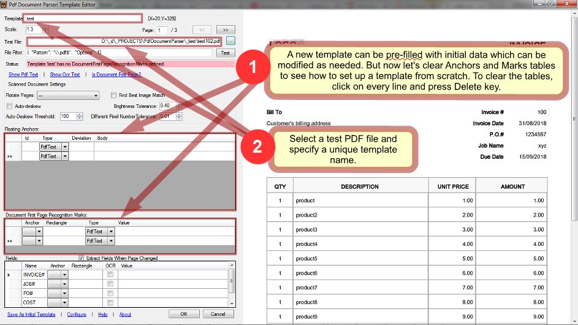
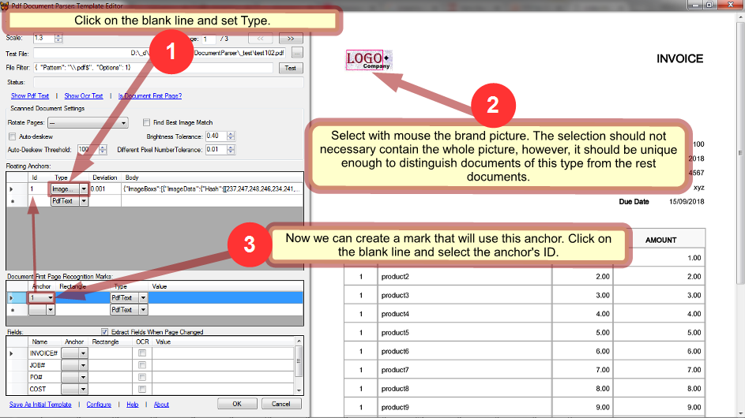
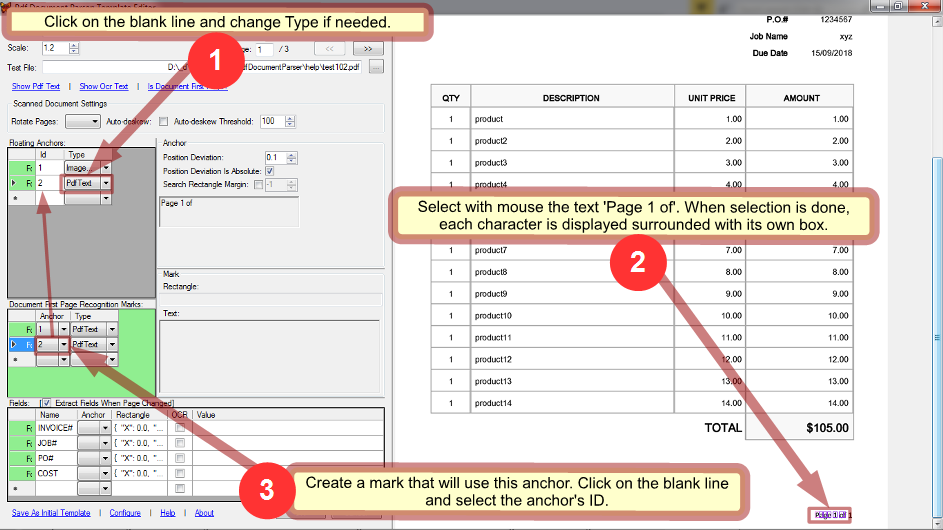
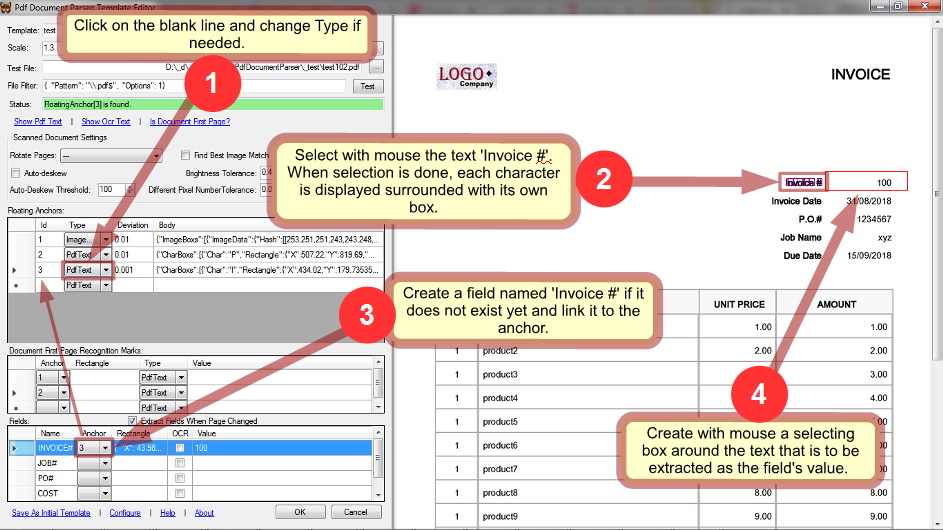
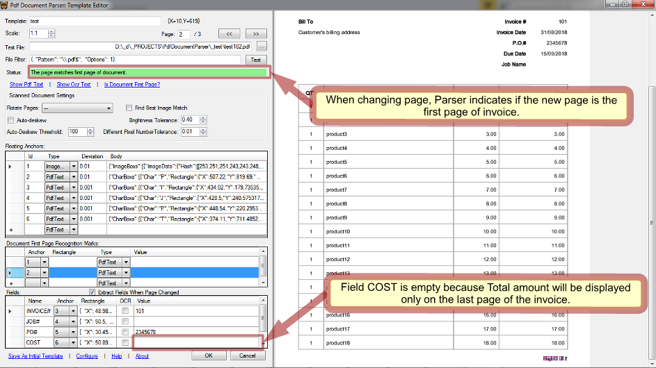
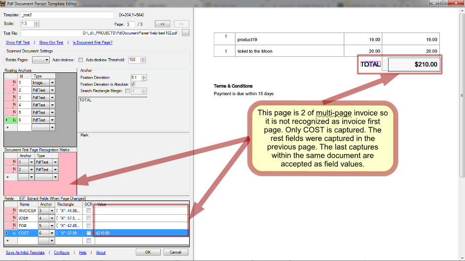

A parsing template can be created from scratch or copied from an existing one. Usually copying saves time because you can adapt existing settings instead of creating new ones. However, in this tutorial we'll see how to set up a template from scratch and so, let's remove all the anchors and marks if any. At the same time take for granted that fields INVOICE, JOB#, PO# and COST are expected in any template so they should not be removed. If they are absent, create them.
Open a test PDF file in the template editor and specify the template's name. As an example, we will parse a PDF consisting of 2 invoices: 
Any template needs at least one mark that will certainly identify type of document and distinguish it from the rest documents you may want to parse. Such a mark should be targeted to some fragment of a document that is unique to its type. Usually it is a logo of a company issued the document.
To create such a mark, first we need to create an anchor that will capture the logo. Then we create a mark and link it to the anchor: 
How do those anchor and mark work inside the parser? In every page Parser looks for the fragment defined by the anchor. Depending on its type it can be either PDF text, OCR'ed text, or image. Each of types is processed by its own very different way and so choosing the right type is crucial in successful and robust parsing. The logo in our example document is an image that is why we set anchor's type to ImageData. This means that Parser will look for the image we selected while creating the anchor.
An anchor can be found anywhere on page. In general way, having an anchor found, Parser takes the selecting rectangle specified by a mark linked to this anchor and locates it relatively to the anchor's position in page. Then Parser compares a text surrounded by the rectangle with the text defined in the mark and when they are equal, the mark is considered found.
But a mark does not obligatory have a selecting rectangle specified. In such a simpler case it is considered found just when its anchor found. It is the case in our example: Parser will look for the logo image and if found, it will choose this template for processing of the document.
In addition to the first mark which is a must, a template usually needs one more mark that checks if a page is page 1 of a document. It is necessary when parsing a multi-document PDF file: when Parser finds such a mark, all the previously found fields are recorded and reset.
So let's create a first page recognition mark: 
Now our template has 2 marks that can recognize type and first page of document. Sometimes more mark is required: for instance when we need to parse different type documents issued by the same company. In our example 2 marks we created are sufficient though.
NOTE: when you select a line in either table, Parser processes it on the current page and the result is displayed in the page viewer and in Status.
Let's create fields. Click on the blank line and fill names if they are not preset. In the same way as above create anchors for the fields and link the fields to them: 
How does Parser process fields? The likeness between a field and a mark is that each has a selecting rectangle (well, a mark might not have but a field always does). And like with a mark, when a field's anchor is found, Parser locates the field's rectangle relatively to the anchor's position and extracts text surrounded by the rectangle. But further the difference between marks and fields comes out: while in a case of mark the captured text is compared with the mark's predefined text, in a case of field the captured text is recorded as a field value.
And one more difference: while all the marks must be met on the same page, fields should not necessary do so. In every page Parser tries to capture all the fields and only the last captures are remembered and recorded when the end of PDF file or a new document is reached.
NOTE: the same anchor can be linked by multiple marks and fields.
When all the fields are set, it's time to walk through the rest pages of the PDF file and see how the template we created works on them.
The page 2 is a new invoice and the marks in our template recognized it properly: 
The page 3 is an invoice continuation. On this page, Parser captured COST while remembering INVOCE, JOB# and PO# captured on the previous page: 
The template worked properly. Now click OK to engage it in parsing.